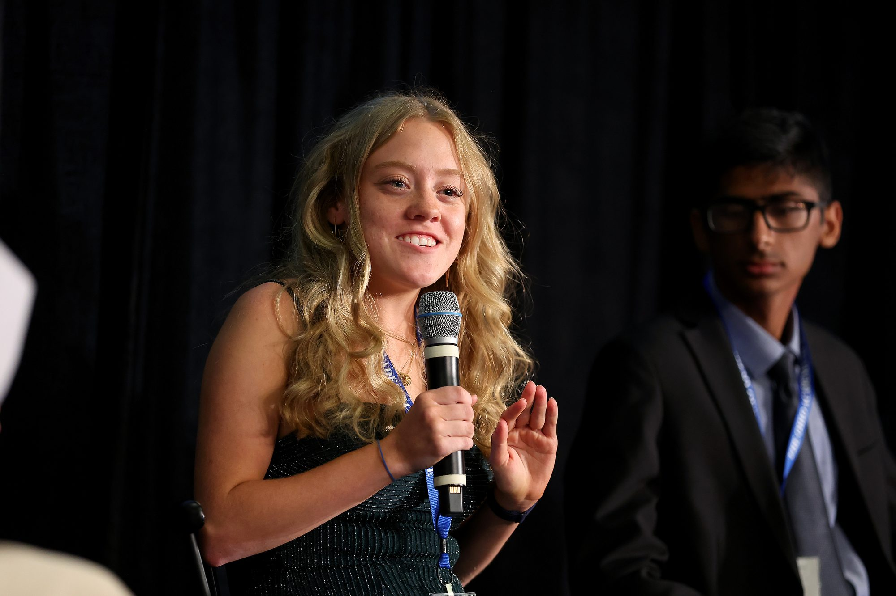

I work at the intersection of deep-sea electrochemistry, renewable energy, and global policy, building systems that close the gap between what science knows and what the world does.
EPA Award, ISEF Qualifier, Melvin Scholar, NYSCamp Delegate, and more.
IEEE, Springer, and Sustentabilis Terra.
FairGame Initiative, launching first-time science fair students across Ohio.
Peer-reviewed work spanning deep-sea electrochemistry, tidal energy, and renewable energy systems.
Developed a hybrid machine learning and deep learning framework to quantify dark oxygen production (DOP) flux within the Clarion-Clipperton Zone, the world's most targeted region for commercial deep-sea mining. The model maps potential ecological consequences of seabed mining on this newly discovered oxygen-generating ecosystem and serves as a decision-support tool for international mining policy.
Read More →Introduces a physics-informed deep learning algorithm that embeds hydrodynamic governing equations directly into the neural architecture for tidal energy site selection. By constraining predictions to physically plausible outcomes, the framework outperforms purely data-driven approaches, providing spatially explicit recommendations for offshore tidal energy deployment.
Read More →FairGame is a nonprofit I founded in November 2025 to close the resource and opportunity gap in STEM education, starting with the science fair pipeline that changed my own trajectory.
We've reached more than 1,000 students, most of them entering their first science fair, through outreach across 10+ school fairs, a statewide teacher network, and a free library of 288 resources for teachers working without a budget.
A startup I co-founded in 2024. Food manufacturers pay to have organic waste hauled away and buried, which is expensive for them and a methane problem for everyone else.
We build modular anaerobic reactors that sit on the manufacturer's own site, digest that waste where it is produced, and turn the digestate into a nutrient additive we sell on. As CTO I lead reactor design, the digestion process, and how one module scales into a system.
Whether you're a researcher, recruiter, educator, or someone who wants to build something that matters, I'd love to hear from you.